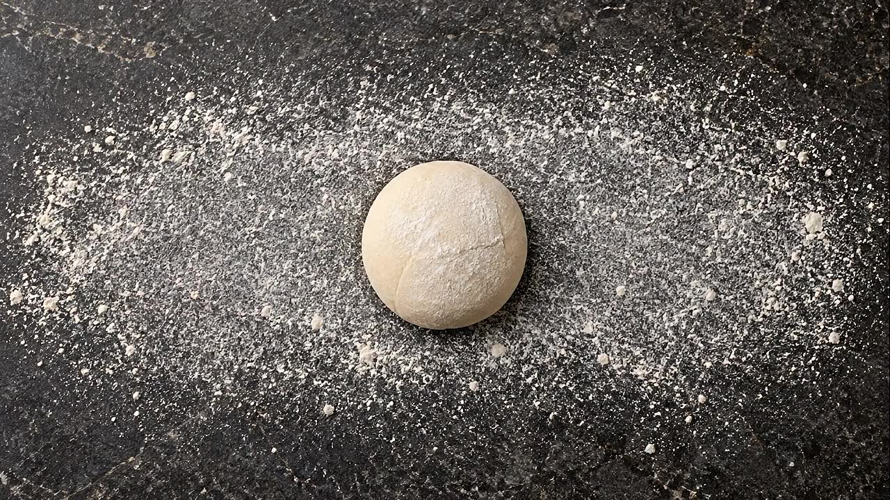
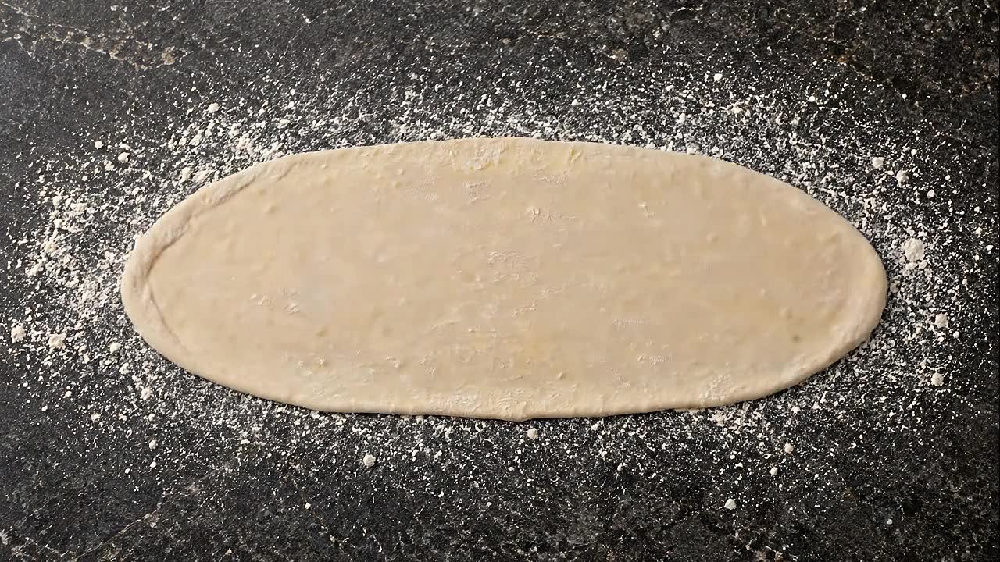
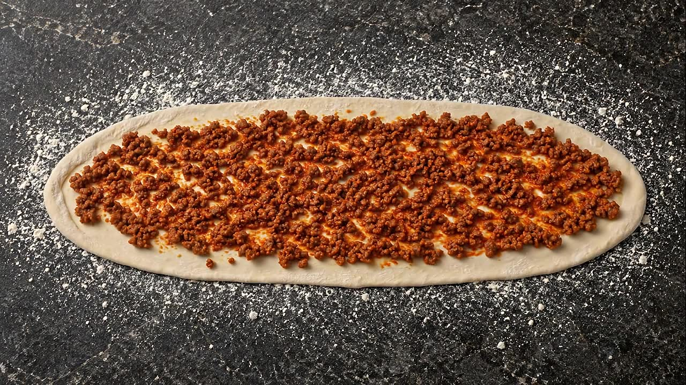
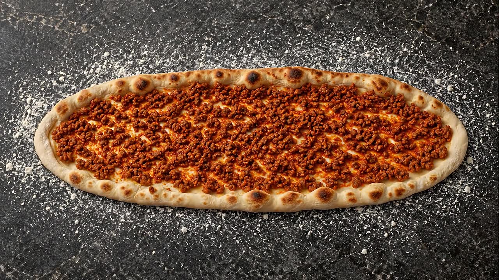
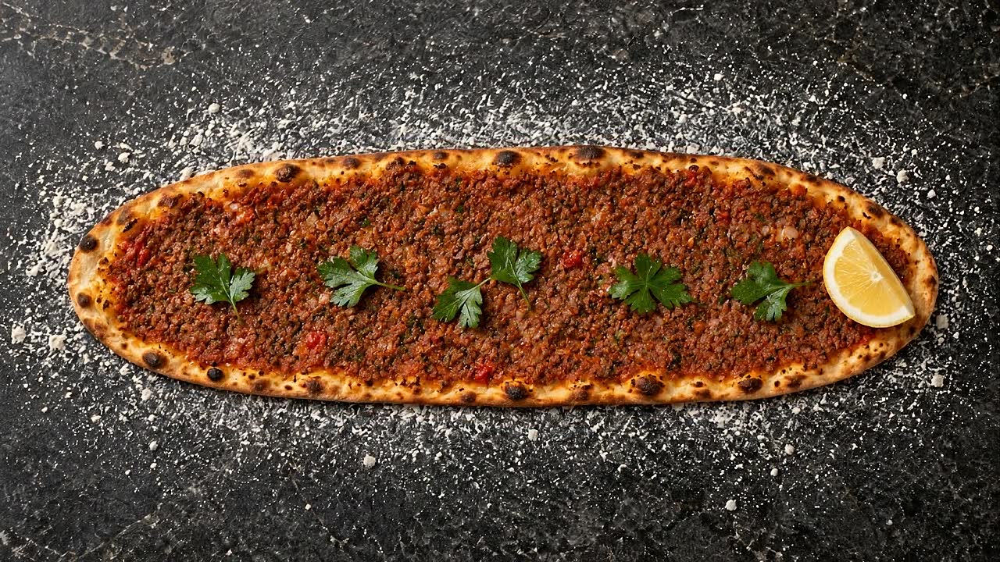

1/5 · Beze
Her lahmacun bir bezeyle başlar.
Hamur yoğrulur, dinlenir, tek tek bezelere ayrılır.
Hamurdan lahmacuna, fırından sofraya.
İki usul
Aynı ince hamur, aynı fırın. Farkı harçta.
Harca sarımsak girer. Keskin, iddialı, ayranla iyi gider.
220 ₺Harçta bol soğan. Daha tatlı, daha yumuşak bir lokma.
220 ₺Beş adımda
Yukarıda kaydırarak izlediğin her şey, tek tek.

1BezeHamur dinlenir, bezelere ayrılır.
2AçılışOrtadan iki uca, incecik.
3HarçKenara kadar, eşit kat.
4FırınAltı çıtır, kenarı benekli.
5ServisLimon, maydanoz, afiyet.Usulü basit, ama sırası var.
Lahmacunun yanında bir de
Kıyma, domates ve biber tepsiye dizilir, fırında pişer. Ekmeğini banmalık.
Sona
İncecik hamur, kat kat, sıcak.
Soğuk ve hafif, yemeğin kapanışı.
Yeni bir Flow videosunu seç; site videoyu karelere ayırır ve sahneyi kaydırmaya bağlar. Video bilgisayarından dışarı çıkmaz.